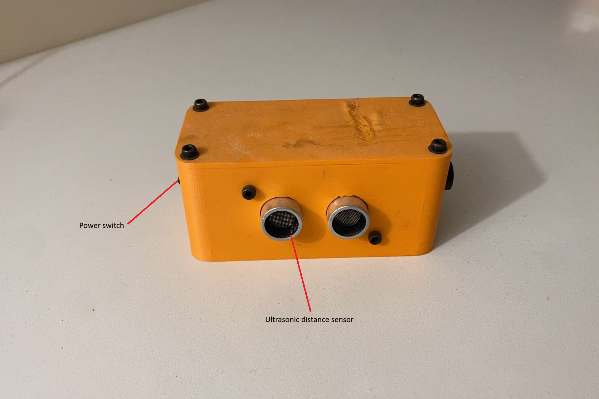

Lap Timer
A lap timer for MTB, BMX or motocross tracks that starts on its own and shows the time of each lap.
- Year
- Early 2021
- Duration
- 1 week
- Team
- Solo
- Status
- Used for over a year to get better at motocross
- CAD
- SolidWorks
- Electronics
- Arduino Pro Mini

Final version
Final version of the lap timer. Its purpose is to let users time each of their laps in any sport that involves going around a circuit or a track (e.g. MTB, BMX, motocross). How to use it: place the lap timer by the circuit or track. The timer starts automatically after the 1st pass in front of it, then keeps running for the following laps. When the laps are done, press the button and the time of each lap is displayed on the screen.
The lap timer in the pictures has been used a couple of times, and the melted area on top is due to improper use.
Proof of concept
Proof of concept: these are pictures of the 1st prototype, which included 2 measurement methods: one with an ultrasonic distance sensor, and one with a laser, a mirror and a light sensor. The distance sensor worked well, but during the 1st lap, ground vibrations made the mirror or the main box move slightly, and the laser no longer pointed at the sensor.